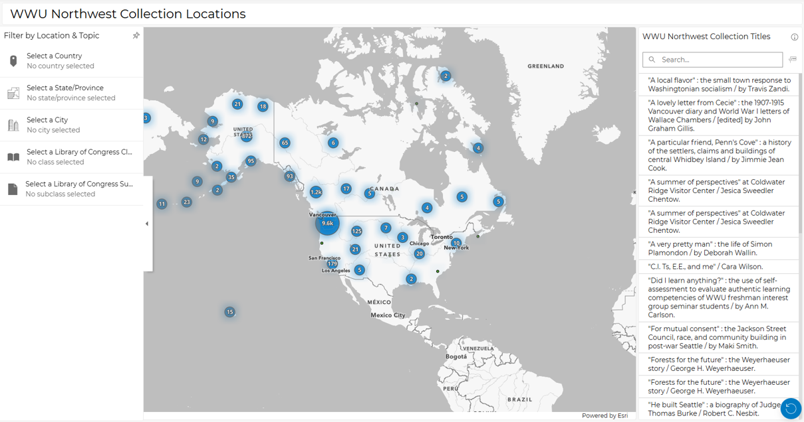

Western Washington University Libraries host numerous collections. Because of this, it can be daunting for students, researchers, and the public to find print materials in specific geographic locations.
To ease this difficulty, I am working with the WWU librarians to create an accessible and interactive tool that allows users to both access library materials and understand the geographic location of the material content.
I am creating an ArcGIS Dashboard as a prototype. While this dashboard is a work in progress, if it is successful, we may expand this work into other collections in the WWU library.
View the Draft Dashboard WWU Library Northwest Collection